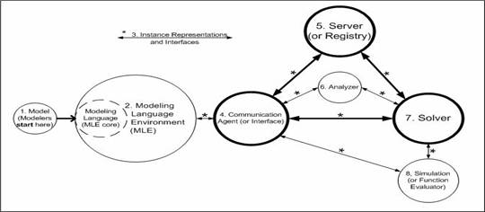
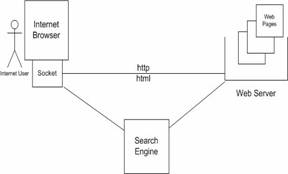
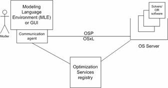
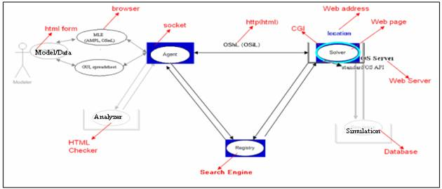

|
OS Process

The process of the optimization system in the above figure is self-explanatory. Typically the process starts from a modeler who has a model (1) to be solved. He constructs the model in an MLE (2). The MLE in turn compiles the model and generates an instance representation (3). The MLE then delegates a communication agent (4) to send the instance to a solver (7). In a local environment, where there is no agent, the link between 4 and 7 is an interface through which the MLE instantiates the solver in memory. In a distributed environment, the MLE may first discover a registered solver through registry (5), therefore the respective discovery link between 4 and 5 and registration link between 5 and 7. The communication with the analyzer (6) is similar to that with a solver (7). The link between communication agent (4) and simulation (8) means that the agent may call the simulation to get a function value, although in an optimization scenario, it is usually the solver (7) that calls the simulation (8) iteratively.
The triangle between communication agent (4), registry (5) and solver (7) is called a Service-oriented Architecture (SOA). The design philosophy of SOA serves as the basis of our Optimization Services framework. A “service” is intended to serve customers. For our optimization system, there are mainly three categories of “human” customers:
- Application developers create and build system components such as modeling language environments and solvers as part of a larger optimization system. The components together take care of such generic functions as managing data, solving optimization problems, and presenting solutions nicely.
- Modelers work in a modeling language environment or GUI to build optimization models and get acceptable solutions.
- Users run application packages that perform optimization at some stage through the optimization system. Users are usually the ultimate customers of any optimization system.
Modelers and application developers may see optimization in different ways. For modelers, a mathematical program is an abstract representation to be analyzed and understood; for application developers, a mathematical program is a concrete instance to be represented, communicated and solved. Modelers benefit most immediately from innovations that help people to choose and experiment with optimization software. Some application developers are also modelers, while others deal mainly with the inputs and outputs of optimization models set up by modelers. Users may not even realize that they are running optimization system components such as solvers, although they are often aware of optimization goals, such as minimizing costs or maximizing profits.
The decentralized architecture of Optimization Services makes it similar to the Internet.
Internet


In order to “surf the Internet” (above figure, top), a user uses an Internet browser to view the Web pages, which usually contain interactive links and forms. Clicking the links and filling in forms are what we call the user inputs. In the scenario of Optimization Services (above figure, bottom), the user is a modeler and his inputs are a model and the model’s data. Instead of the browser, the modeler constructs the model in a Modeling Language Environment or in a Graphical User Interface (GUI) environment and instead of sending the model inputs to a web server, the MLE or GUI sends the inputs to an OS server. The OS server hosts solvers rather than Web pages. Although the Internet existed long before it became popular, the entertaining Web pages were what made the Internet successful. The same can be said about Optimization Services. Without the actual “contents” provided by the solvers, OS is just an empty skeleton that can never be widely used no matter how well the skeleton is designed.
To further apply the analogy, it is never the browser that contacts a web server. Rather the browser opens a socket, and through the socket, the browser sends the request and waits for the response. These all happen without the user’s knowledge. The exact equivalent of the socket in Optimization Services is the communication agent. The MLE or GUI delegates the agent to send an optimization instance to the remote OS server that hosts the solver. Like the socket, the agent understands all the communication protocols in order to establish the connection. But instead of using the HTTP protocol and sending/receiving HTML instances, the agent uses the OSP communication protocol and sends/receives OS instances.
Nowadays people heavily rely on search engines to find Web pages. The Optimization Services registry serves the function of a search engine. But unlike the Internet search engines, there has to be a unique registry in the whole Optimization Services system to ensure Quality of Service (QoS). Communication agents always know where the registry is, as there is only one. This registry has complete information of available services, as this is the only place that the services can register. The OS registry will not be overburdened as no software is connected through it. When a certain query is sent to the OS registry, usually from an MLE or GUI, the OS registry returns the locations of the found software and the MLE or GUI makes a peer-to-peer contact with the software at the provided location. This discovery process is similar to the search engine process, with the exception that everything in the OS system happens automatically between the software components, without user interaction.
On the opposite side of the discovery process is the registration process. In the case of the Internet, it is usually the search engine “crawlers” that automatically collect the contents of all the Web pages. In the Optimization Services case, it is the OR software developer’s responsibility to send the required information to, and get approved by, the OS registry, possibly through a mixture of automatic and manual procedures. This is primarily due to two reasons. One is that the quantity of OR software packages is not nearly large enough to be crawled efficiently. A second, and more important reason, is that the requirement of QoS on the OS registry is much stricter in order to ensure smooth functioning between OS components. The mechanism of “wantonly” crawling and storing “unwarranted” things found on the hyperlink paths degrades the Optimization Services.
In the following figure, we show that most of the components in the Optimization Services system have a corresponding similar part in the Internet architecture. The similarity is not the initial intention of the OS project; rather it is the result that both are good designs based on a decentralized architecture.

|

{kind=link}
{kind=link}
{kind=link}
{kind=link}